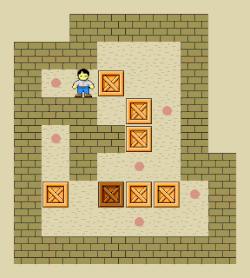
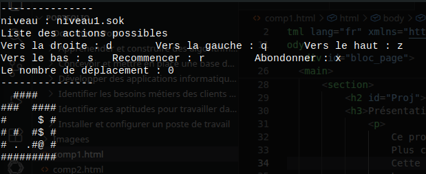
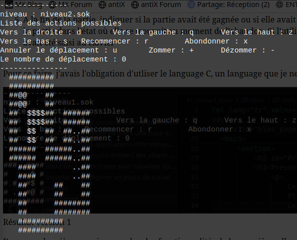

Projet
Présentation du projet
Ce projet était dans le cadre d'une'Situation d'apprentisage et d'évaluation (SAE) dont le but est d'acquérir la capacité de développer — c’est-à-dire concevoir, coder, tester et intégrer — une solution informatique pour un client.
Plus concrètement, en partant d’un besoin exprimé par un client, l’objectif est de réaliser une application qui réponde à ce besoin.
Cette compétence permet ainsi d'appréhender les débuts du développement d'application.
Le projet consistait ainsi à développer notre propre jeu du Sokoban, qui devait être jouable sur le Terminal et non graphique.
Si vous ne connaisez pas le principe du Sokoban, le joueur contrôle un employé d'entrepôt qui doit pousser des caisses vers des points précis d'un niveau pour le compléter.
On devais le programmer en C.

Voici un exemple de gameplay du jeu du Sokoban
Déroulé du projet
Dans une première version, j'ai du réaliser les fonctionnalités demandées dans le cahier des charges. Dans cette
version, mon programme devait, dans cet ordre :
- Demander à l’utilisateur de saisir le nom d’un fichier .sok
- "Charger" une partie en exploitant le fichier dont le nom a été saisi par l’utilisateur
- Afficher le plateau de jeu, précédé d’un entête d’informations
- Gérer les déplacements de l’utilisateur jusqu’à la victoire ou l’abandon de la partie. Après
chaque déplacement le plateau devait être modifié puis réaffiché avec son entête. L’utilisateur avait
aussi la possibilité de recommencer la partie depuis le début
- A la fin de la partie, indiquer si la partie avait été gagnée ou si elle avait été
abandonnée. S’il y avait eu abandon, le programme proposait à l’utilisateur de sauvegarder la
partie dans l’état où elle se trouvait au moment de l’abandon. Si l’utilisateur acceptait, le programme devait enregistrer la partie dans un fichier
.sok dont le nom avait été saisi au clavier
Pour ce faire, j'avais l'obligation d'utiliser le language C, un language que je ne connaissais pas.
Voici le résultat que j'ai produit pour la première version : Code disponible

Résultat version 1
Dans une deuxième version, en plus des fonctionnalités de la première, elle aller incorporer de nouvelles mécaniques. Elle devait en plus :
- Proposer la possbilité de zoomer (touche ‘+’) ou de dézoomer (touche ‘-’)
- Mémoriser la suite des déplacements effectués
- Proposer d’annuler le dernier déplacement (touche ‘u’ pour undo)
- Proposer de sauvegarder la suite des déplacements effectués quand la partie est terminée par
abandon ou par victoire
Voici le résultat que j'ai produit pour cette seconde version : Code Version 2

Résultat version 2
Bilan du projet
En termes de compétences techniques, ce projet m'a permit d'obtenir des bases en C. Grâce à lui, j'ai programmé ma première petite application.
Sinon, il m'a fait aussi acquérir de nouvelles compétences personnelles comme notamment la rigueur pour pouvoir respecter parfaitement le cahier des charges.
J'ai tout de même connu quelques difficultées, notamment au début avec le C car je n'en avais jamais manipulé avant.
Certaines fonctionnalités m'ont posé aussi des problèmes, notamment le déplacement du personnage qui fût la fonctionnalité la plus difficile à mettre pour moi.
Si je devais analyser ce projet, je le considère comme assez réussi et je considère avoir validé cette compétence.